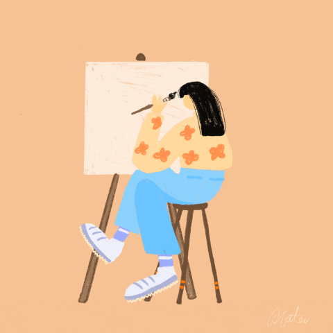
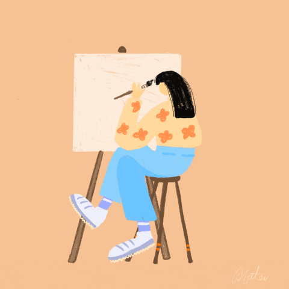

I am Kondapaneni Lakshmi Poojitha, an international student from India.
I completed my undergraduation in Computer Science in the year 2020 at Vignans Foundation for Science Technology and Research, Andhra Pradesh, India.
I got placed into a Multinational Company called Tata Consultancy Services in my final year of undergraduation and later worked for TCS for 2 years.
But my dream of pursuing a masters course stopped me from working and brought me to the US to fulfil my dream.
In my free time, I enjoy doing:
- Gardening
- Painting
- Reading Books
- Cooking
- listening to music
- Dancing
List of my favourite websites that I use for the above mentioned hobbies:
- Gardening: Super Seeds
- Painting: Artists Network
- Cooking: Learn to Cook
 
